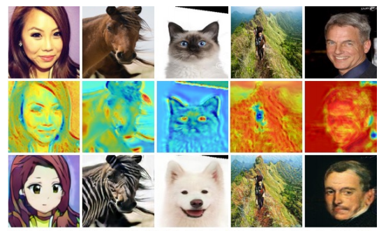
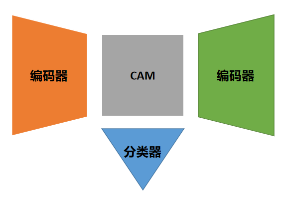
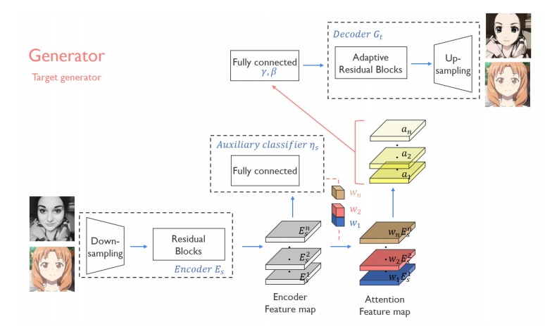
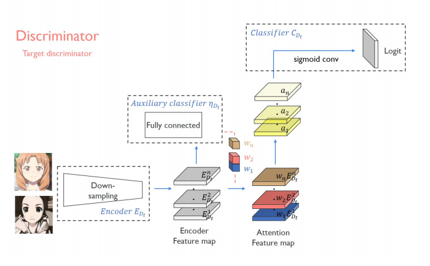
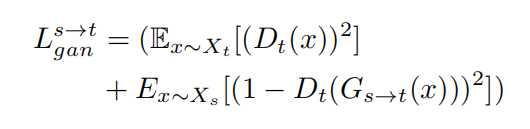
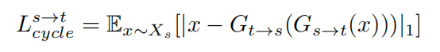
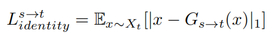
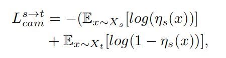
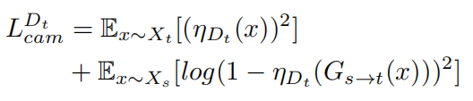

GAN+注意力机制
UGATIT是一个使用注意力机制来完成两个域之间的图像翻译任务的GAN模型。文章有两个创新之处：第一点在于修改了生成器与判别器的结构，给GAN加入注意力，使模型能够更好的完成涉及到几何变换的图像翻译；第二点在于提出了AdaLIN算法，作者认为AdaLIN可以使模型从数据集中学习到几何变换的尺度（举个例子，将马变成斑马几乎不需要几何变换，而将狗变成猫却需要较大的几何变换，AdaLIN可以使一个模型能够在不同的数据集上work而不需要调整超参数）。

图像翻译模型根据数据集的区别可以分为有监督与无监督两种。有监督模型需要使用paired数据集，例如pix2pix；而无监督模型只需要准备2个域的数据集即可，例如CycleGAN，StarGAN。实际应用中，paired数据集的制备是十分困难的。例如想把马变成斑马，很容易收集到一个全是马的数据集和一个全是斑马的数据集，但是不可能找到一个数据集使得里面的每只马都有对应形态的斑马。要论应用价值，显然是无监督模型更有前景。但是相比于有监督模型，无监督模型因为缺少paired训练数据，效果一般较差。UGATIT是一种无监督的图像翻译模型。
以往的无监督模型通常存在两个问题：以CycleGAN为首的模型通常在涉及到颜色，纹理变换的任务中表现良好，例如马变成斑马，但是却在涉及到几何变形的任务中表现很差，例如猫变成狗；以DRIT为首的模型通过调超参数，可以在两个任务中都表现很好，但是调超参数这件事本身就是十分消耗算力与精力的，用文章中的一句话来形容：performance are limited to the dataset。
UGATIT的两个创新之处刚好解决了上述两个问题。引入注意力机制可以显著提高生成图像的质量，而提出的AdaLIN算法则可以自适应数据集，使用同一套网络结构在不同任务上取得好的结果。
这一部分先写写注意力机制的引入，AdaLIN算法等以后补完IN和LN的论文后回来填坑。UGATIT在生成器与判别器网络中同时加入了注意力机制，判别器中的注意力机制引导生成器去关注那些影响判别器判断的关键细节，而生成器中的注意力机制引导模型关注两个域图像之间的差别。
记两个域分别为S与T，下面以\(G_{s\rightarrow t}\)的结构为例说明UGATIT是如何在生成器中加入注意力机制的。生成器共包含3个部分，分别为编码器\(E_s\)，分类器\(\eta_s\)以及解码器\(G_t\)，而常规的GAN通常只含有编码器与解码器。网络结构大致如下图，其中CAM为Class Activation Map：

记\(E_s^k(x)\)为编码器生成的特征图中的第k张feature map。类似于CAM的做法，记每张feature map的权重为\(\omega_s^k\)。定义\(\eta_s(x)=\sigma(\sum\limits_k{\omega_s^k \sum\limits_{i,j}{E_s^{k_{i,j}}(x)}} )\)，代表先对特征图做全局平均池化，再对各张feature map加权求和。如果\(\eta_s(x)=1\)，代表x来自域S。通过训练分类网络\(\eta_s\)，会得到一系列权重\(\omega_s^k\)，再将每张feature map乘上对应的权重，得到了\(a_s(x)=\{\omega_s^kE_s^k(x)\}\)，即为加权后的特征图（其实就是CAM），以此作为解码器\(G_t\)的输入。判别器与生成器引入注意力机制的手段几乎一样，唯一区别在于得到加权后的特征图（即CAM）后，不再输入解码器，而是将CAM作为PatchGAN的输出。上面的过程整理为论文中的这2幅插图：

下面介绍UGATIT是如何设计损失函数的。首先是对抗性损失，为了训练的稳定性，作者将原始的负对数改为了最小平方误差：
之后是在unpaired训练集上训练翻译模型必不可少的循环一致性损失与图像重构损失：

这里具体解释下CAM损失。当训练生成器时，希望编码器提取到的特征图能够完全反应输入图片的特征，因此希望\(\eta_s(x_s)=1\)与\(\eta_s(x_t)=0\)，损失函数如下：
训练判别器时也是同理：
在不同数据集上面UGATIT的效果都是不错的，尤其是涉及到几何变形时效果远胜于CycleGAN，可见注意力起到的作用。UGATIT唯一的不足就是模型太大了，我的gtx1060根本跑不了，用了实验室的rtx2080ti跑了一周才得到了不错的结果。个人认为有2点可以改进之处：第一点，减小模型大小；第二点，UGATIT的注意力是自己学出来的，如果可以加入人为引导的注意力图像，例如利用分类网络生成对应数据集的CAM权重，效果可能会更好，寒假试着实验一下。